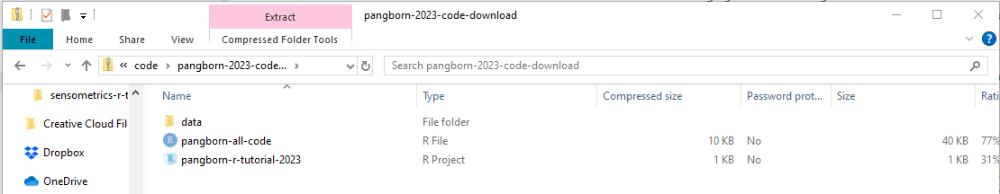

Introduction
This step-by-step walkthrough has two parts:
- Instructions to download the required software and check that it’s set up correctly, which all participants should complete as soon as possible using the computer you will bring to the workshop.
- An optional series of exercises testing basic R knowledge like data types and using functions, which includes links to external resources. We recommend this for anyone nervous about their ability to keep up.
The first portion will take about 15 minutes to read and run the tests. If you don’t yet have R and Rstudio on your laptop, it will take longer, depending on your internet speed and whether you need approval from you IT department.
The optional knowledge-check questions will take around 10-20 minutes to answer. If you need additional help, reading through various resources and practicing will take longer, possibly up to a few hours, but you can leave and come back at any time!
Part 1: Required Software
In order to be prepared to participate for the in-person tutorial on publication-quality graphics in the tidyverse, you should bring a laptop that has the following installed:
R(version 4.1.0 or newer)- RStudio (version 2022.07.0 or newer)
- The
Rpackages:- tidyverse
- tidytext
- FactoMineR
- ca
- ggrepel
- ggforce
- cowplot
- patchwork
- wesanderson
- The tutorial materials from our GitHub. You can download the data we’ll use here now, and the code files will be finalized about a week before the conference.
You may need help or pre-approval from your IT department if you will be using a work laptop. You should install all of these pieces of software and run the test code before you travel to minimize the setup necessary at the start of the tutorial. Don’t plan to rely on internet access at the venue during/right before the tutorial–we’re always the very first thing on the conference schedule, so there are often wi-fi issues still being worked out.
If you get stuck or need any help, email us at jlahne at vt dot edu and hamilton at flavorlinguist dot com.
Installing R
You will need the free, open-source statistical programming language
R installed to participate in the tutorial. This should be
possible even on “managed” work computers–you can install R
to your local profile without admin credentials.
If you have never used R on this computer before,
install the newest version of R from the CRAN website, following these
written instructions or one of these videos:
If you are using a work-managed Windows computer, you may see a screen that looks like this:
You can safely select “No” and proceed through local installation.
If you already have R on your computer, run
sessionInfo() in the R console to make sure
you are using version 4.1.0 or newer. The tidyverse is
only compatible with versions of R from the last few years,
and there are major updates periodically. You can have more than one
version of R installed on one computer, although keeping
multiple versions of packages installed to go with it is more
challenging and may require additional tools.
Setup check: R
Open your new copy of R and paste this code into the
console:
sessionInfo()$R.version$major
Press the enter key to run the code.
Installing RStudio
While you can do everything that we’ll be demonstrating
directly in the R console, as you did for the last
question, it is difficult to keep track of your scripts, manage files,
and preview plots with the regular R interface. We will be
using RStudio to make this faster and easier. Unless
you are already very comfortable with R, we recommend
downloading RStudio.
RStudio is an “Interactive
Development Environment” (IDE) for
working with R. Without going into a lot of detail, that
means that R lives on its own on your computer in a
separate directory, and RStudio provides a bunch of better functionality
for things like writing multiple files at once, making editing easier,
autofilling code, and displaying plots.
Downloading RStudio
Download the free version of RStudio Desktop from the Posit website
If you are using a work-managed Windows computer, you may get stuck at a screen that looks like this:
Unfortunately, you do need a system administrator to approve the RStudio installer on Windows PCs. If you are in this situation, reach out to your IT person now and ask them if RStudio is approved software and how to download it.
As a backup, you can create a Free Posit Cloud Account to use RStudio through your internet browser. This account is limited and requires an active internet connection, but it will allow you to complete the tutorial exercises as long as the conference wi-fi is working as expected.
Changing your RStudio settings
Open RStudio. Look at the top menu, which starts with
File, then Edit.
Navigate through this menu to
Tools > Global Options.
Uncheck all the boxes that have to do with restoring projects and workspaces, so it matches this screenshot:
You can see from the lefthand box that this was the
General tab of the Global Options. Navigate to
Code > Completion and select the checkboxes to allow
using tab for autocompletions and allowing multiline
autocompletions, as shown below:
Setup check: RStudio
Keep R or RStudio open. You will need it for the rest of
this tutorial.
Installing R Packages
Keep R or RStudio open. You need to install the
packages:
- tidyverse
- tidytext
- FactoMineR
- ca
- ggrepel
- ggforce
- cowplot
- patchwork
- wesanderson
You can do this by pasting the following code into the R(Studio) console:
install.packages(c("tidyverse", "tidytext", "FactoMineR", "ca",
"ggrepel", "ggforce", "cowplot", "patchwork", "wesanderson"))Hit the enter key on your keyboard to run.
Setup check: R packages
You can use ? in R to pull up help files
for any function in a package you have installed. Use the following code
to read the help file for the function geom_text_repel()
from the package ggrepel:
?ggrepel::geom_text_repel
You only have to read the two sentences under the Description heading. We don’t expect you to understand what all of this means yet.
Downloading data
During the tutorial, we will be using two example sensory datasets for all of our plots.
Download the pre-made archive of data from the workshop github repo now.
Close all open sessions of R and RStudio. Unzip
the archive. If you’re not sure how to do this, see the guide
for Windows and MacOS here.
Open the unzipped folder in the file explorer. It should have an
.Rproj file and two folders named code and
data. If you see a pink “Extract” button at the top of the
file explorer, you still need to unzip the archive.

Opening the R Project
Double-click on pangborn-r-tutorial-2025.Rproj to open
the project in RStudio, which will also set your working directory to
this folder.
In the Files pane (which will be on the bottom right
unless you’ve changed your settings), open
environmenttest.R. Copy-and-paste this code into the
console or use Shift + Enter to run each line in order.
If the R console prints any red errors at this point,
please send them to us in an email (jlahne at vt dot edu & hamilton
at flavorlinguist dot com). If your packages are installed correctly,
this code should clean up the data set we’ll be demonstrating our plots
with, run a Correspondence Analysis, and print the first singular value
of the decomposition.
Summary
Fantastic! If you’ve gotten the expected output from all of the exercises, you should have everything you need to follow along with the workshop even if there are issues connecting to the internet at the conference. This should ensure that the start of the workshop goes smoothly and that we can spend as much time as possible on the subject matter, so we and your fellow students deeply appreciate your cooperation.
You will get a copy of all the code that we will explain during the
workshop, but this is considered an intermediate R workshop
and we will not be spending time on basic R skills,
programming or statistical theory, or navigating RStudio.
It will be helpful to know:
- How to store and access data in objects (aka variables, casually)
- How to use a function
- What the common R data types (logical, numeric, character) and structures (vector, factor, data frame, matrix) are
- How to install and load packages
- How to
chain multiple functions together in a readable fashion with pipes
(
|>or%>%)
If any of these concepts are unfamiliar to you, or if you’re not comfortable reading and running the short code examples from this setup exercise, you can optionally look into the following resources before (or after!) our tutorial:
Part 2: R Skills Quiz
This is a short quiz that will test your knowledge of prerequisite concepts in R that will help you get the most out of the workshop. We aren’t looking at your progress, but if you get a question wrong, then you will automatically be given resources to improve your knowledge in that area.
Expect the quiz itself to take around 10-20 minutes. If you need additional help, reading through various resources and practicing will take longer, possibly up to a few hours, but you can leave and come back at any time! Our emails are open if you get stuck.
Skills: Functions and Objects
The mean() function has an argument called
na.rm, which is necessary if you want to find the average
of a dataset with missing values.
mean(sweetness_intensity)Hint: You can use ?mean to see the
order and names of the arguments! See this
Data Carpentries tutorial on function arguments and finding help for
more information.
Skills: Saving and Loading Data
In your working directory, you have a data subfolder
that contains a file called 20250112_clt_data.csv. How
would you get the data from this file into an R data frame called
clt_data?
clt_dataHint: If you get an error that says “cannot open the
connection”, make sure you’re reading the file from the
data subfolder, not the
working directory! Take a look at this
primer on reading in data in base R or this primer for the
tidyverse. If you want to use the tidyverse functions, don’t forget
to load the packages with library()!
Skills: Data Types
Rewrite the following code so that the Country of the
sixth product, 383, is changed to “Australia” instead of creating a
missing value.
product_key <- read.csv("data/wine_product_key.csv", stringsAsFactors = TRUE)
product_key$Country[6] <- "Australia"Hint: This is a factor error. For info on why this happens and why it matters, you can see the chapter on factors from R for Data Science.
Skills: Packages
Skills: Pipes
Rewrite the code below
(read.csv("data/20200101_berries_clt.csv") %>% summarize(correlation = cor(Liking, Sweetness)) %>% pull(correlation) %>% round(2))
without pipes.
read.csv("data/20200101_berries_clt.csv") %>%
summarize(correlation = cor(Liking, Sweetness)) %>%
pull(correlation) %>%
round(2)Hint: The pipe takes whatever is on the left and
makes it the first argument of the function on the right. See this page from the
magrittr package for more info.